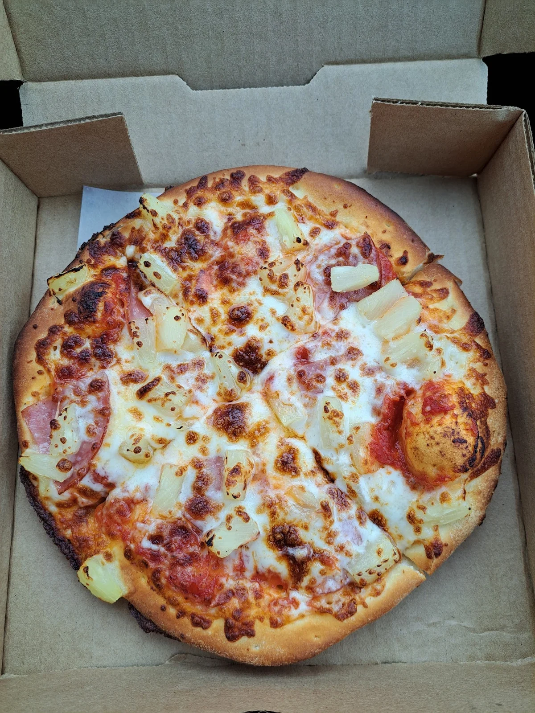
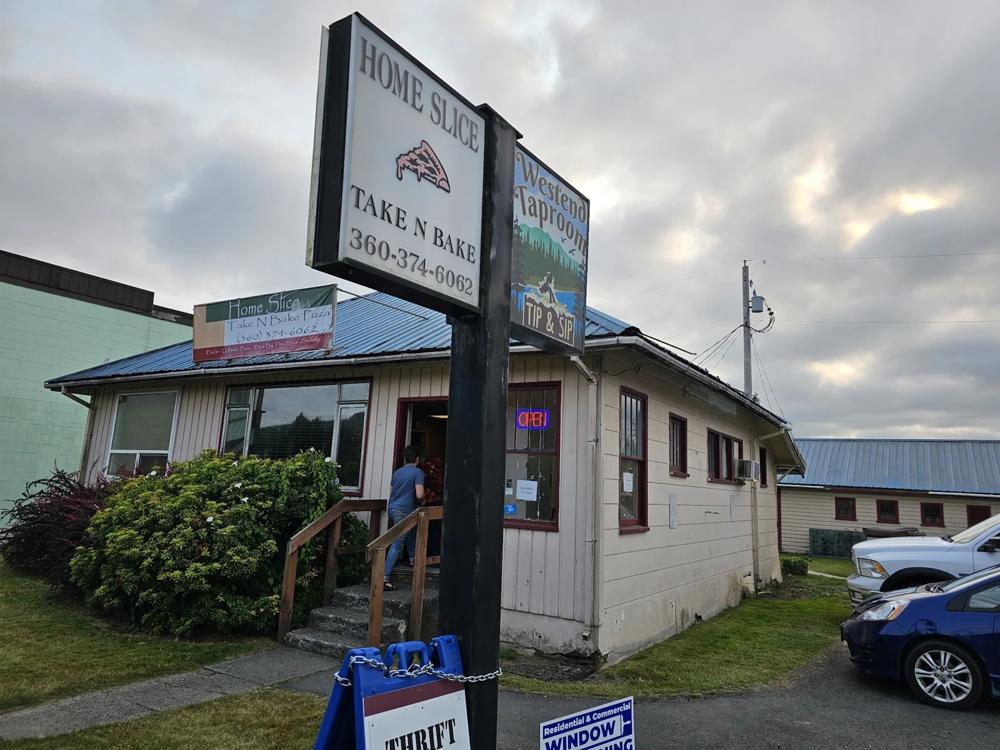

Salami, pepperoni, sausage, onion, green pepper, mushroom, olives and tomato.
PIZZA TO GO · FORKS, WASHINGTONGood pizza.
Good pizza.
Wild country.
Rainforest days. Pacific coast detours.
Bring a little Home Slice along for the ride.

TAKE IT HOME.
TAKE IT ALONG.
110 S FORKS AVE / OLYMPIC PENINSULATAKE IT ALONG.
PIZZA · CALZONES · CHEESY BREADYOUR NEXT STOP: HOME SLICE ↗

A LITTLE SLICE OF FORKSSmall-town stop.
Meet us on South Forks Avenue ↗
Small-town stop.
Pizza-sized plans.
Find Home Slice Take N Bake on South Forks Avenue, right in Forks on Washington’s Olympic Peninsula.
Pick out a pizza, add something on the side, and call the shop to put your order together. Taking it home to bake? Ask about the preparation and baking instructions when you order.
FROM GOOGLE REVIEWSGood pizza.
Good pizza.
Good words.
G4.6★★★★★544 reviews on Google ↗
“Very good pizza.”
Prateek GuptaGoogle review excerpt
Google ↗“I love the Home Slice Take N Bake.”
Gabriell DesrosiersGoogle review excerpt
Google ↗“Very good pizza & cheesy bread.”
sigray2734Google review excerpt
Google ↗Selected excerpts, not the full range of reviews. Rating and count checked October 19, 2026; they may change. Read all reviews on Google ↗
HOURS & LOCATIONNext stop:
Next stop:
Home Slice.
FORKS, WASHINGTON · PACIFIC TIME110 S Forks Ave
Forks, WA 98331 ↗(360) 374-6062 ↗
Forks, WA 98331 ↗(360) 374-6062 ↗
Monday12:00 PM – 8:00 PM
Tuesday12:00 PM – 8:00 PM
Wednesday12:00 PM – 8:00 PM
Thursday12:00 PM – 8:00 PM
Friday12:00 PM – 8:00 PM
Saturday12:00 PM – 8:00 PM
Sunday12:00 PM – 8:00 PM
Hours are listed on Google. Holiday hours may vary; call to confirm before visiting.
GOOD TO KNOWA few
A few
good questions.
How do I order?
Call (360) 374-6062 to discuss your pizza, toppings and pickup. Confirm the total and availability when you order.
Can I bake my pizza at home?
Ask about the take-and-bake option when ordering, and get the baking and storage instructions directly from the shop.
Where is Home Slice?
Find the shop at 110 S Forks Avenue in Forks, Washington. Tap the address or directions button to open Google Maps.
THE GOOD PART STARTS HEREMake tonight
Call (360) 374-6062 ↗